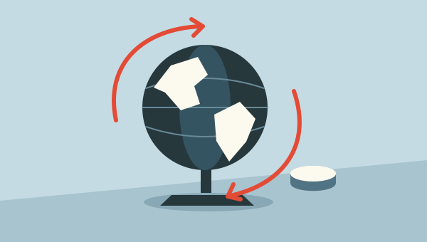
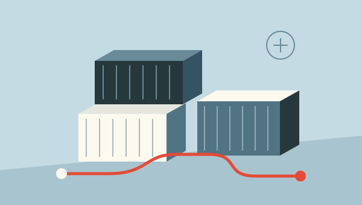
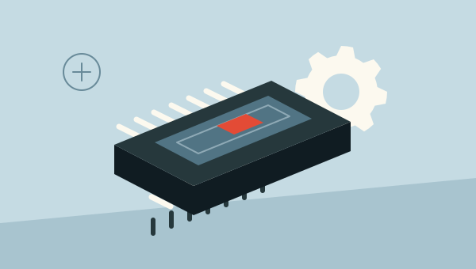
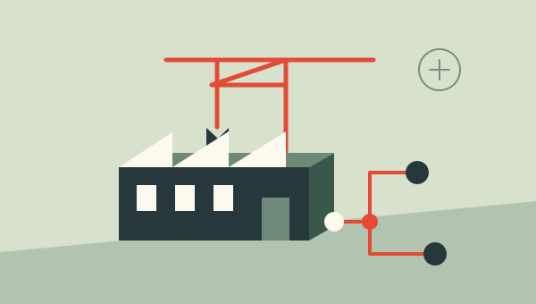

<!doctype html><html lang="ru"><meta charset="utf-8"><meta name="viewport" content="width=device-width,initial-scale=1"><title>Обложки категорий</title><style>body{margin:0;padding:40px;background:#f1f3f5;color:#263238;font:15px Arial,sans-serif}main{max-width:1200px;margin:auto}h1{font-size:26px;margin:0 0 12px}header p{color:#78828a;margin-bottom:30px}.grid{display:grid;grid-template-columns:repeat(3,minmax(0,1fr));gap:28px}figure{margin:0}img{display:block;width:100%;aspect-ratio:600/340}figcaption{font-weight:600;margin-top:13px;line-height:1.4}small{display:block;color:#78828a;margin-top:5px;font-size:11px}a{color:inherit;text-decoration:none}@media(max-width:800px){.grid{grid-template-columns:repeat(2,minmax(0,1fr))}body{padding:20px}}@media(max-width:500px){.grid{grid-template-columns:1fr}}</style><main><header><h1>Обложки категорий</h1><p>10 SVG · единая палитра и геометрия</p></header><div class="grid"><figure><a href="finance-rates.svg"><figcaption>1. Финансы и ставки</figcaption><small>finance-rates</small></a></figure><figure><a href="currencies-payments.svg"><figcaption>2. Валюты и международные расчеты</figcaption><small>currencies-payments</small></a></figure><figure><a href="commodities-energy.svg"><figcaption>3. Сырье, энергия и издержки</figcaption><small>commodities-energy</small></a></figure><figure><a href="demand-consumption.svg"><figcaption>4. Спрос и потребление</figcaption><small>demand-consumption</small></a></figure><figure><a href="logistics-supplies.svg"><figcaption>5. Логистика и поставки</figcaption><small>logistics-supplies</small></a></figure><figure><a href="competition-market.svg"><figcaption>6. Конкуренты и рынок</figcaption><small>competition-market</small></a></figure><figure><a href="regulation-taxes.svg"><figcaption>7. Регулирование и налоги</figcaption><small>regulation-taxes</small></a></figure><figure><a href="team-labor.svg"><figcaption>8. Команда и рынок труда</figcaption><small>team-labor</small></a></figure><figure><a href="technology-risks.svg"><figcaption>9. Технологии и цифровые риски</figcaption><small>technology-risks</small></a></figure><figure><a href="investment-development.svg"><figcaption>10. Инвестиции и развитие</figcaption><small>investment-development</small></a></figure></div></main></html>